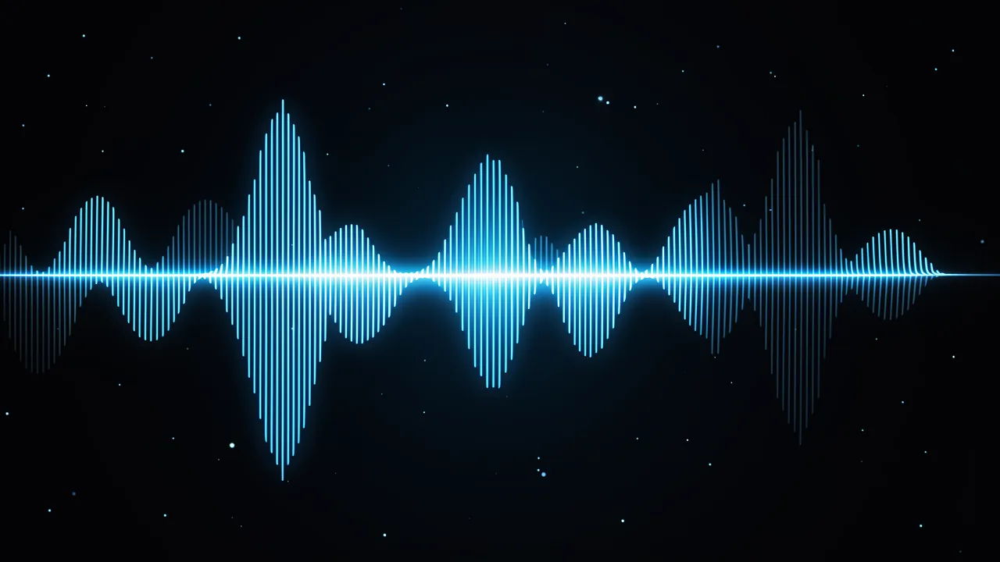

수노의 새로운 워터마크: AI 음악 스팸 시대의 종결인가?
인공지능 기반 음악 분야의 거대 기업이 마침내 자사의 음악이 단순히 스포티파이 피드를 채우기 위해 만들어진 저품질 디지털 음원이 아니라는 것을 증명하려 한다.

존재하지 않았던 노래
좋아하는 플레이리스트를 훑어보며, 오후의 무기력함과 완벽하게 어울리는 부드럽고 로파이한 비트에 젖어 있다고 상상해 보세요. '좋아요'를 누르고, 아침 루틴에 추가한 다음, 문득 이런 생각이 듭니다. '이 노래를 만든 건 사람인가, 아니면 후드를 뒤집어쓴 남자가 새벽 3시에 '슬픈 트럼펫 재즈'라고 입력한 걸까?'
이것은 단순한 철학적 위기가 아닙니다. 현재 음악 산업의 모습입니다. 몇 달 동안 인터넷은 엄청난 양의 AI가 생성한 콘텐츠가 스트리밍 플랫폼을 휩쓸면서 그 첫 파문을 느끼고 있습니다. 마치 '축하합니다, 당첨되셨습니다!' 이메일의 디지털 버전과 같습니다. 하지만 가짜 수표 대신 수천 곡의 가짜 노래가 쏟아져 나와 전 세계 음악 시장을 혼란스럽게 만듭니다.

'스팸 차단' 전략
AI 음악 분야의 선두 주자인 Suno는 책임감 있는 자세를 취하지 않으면 저작권자 및 주요 스트리밍 서비스 업체에 의해 플랫폼 전체가 파괴될 수 있다는 것을 깨달았습니다. Suno는 워터마크 삽입 및 다운로드 제한 강화 등 새로운 계획을 발표했습니다. 기본적으로 Suno는 '무법천지'에서 '규제된 디지털 스튜디오'로 전환하되, 그 과정에서 음악의 매력을 잃지 않으려고 노력하고 있습니다.
AI가 생성한 곡들이 대량으로 제작되어 스트리밍 수익을 얻는 데 사용되고 있습니다.
이것은 단순한 권고 사항이 아니라, 방어적인 전략입니다. 목표는 '대규모 남용'을 방지하는 것입니다. 여기서 '대규모 남용'이란 봇을 사용하여 수백만 곡의 노래를 제작하여 적은 수익을 얻으려는 행위를 의미합니다. 이는 누군가가 카지노에 위조된 동전을 대량으로 유통시키려는 행위와 같습니다. 가짜 동전과 진짜 동전을 구별할 수 없다면, 경제 시스템 전체가 붕괴될 것입니다.
'디지털 지문' 작동 방식
그렇다면 노래에서 실제로 '볼 수' 없는 워터마크는 어떻게 작동할까요? 앨범 표지에 거대한 '로봇이 만들었습니다' 스티커를 붙이는 것과는 다릅니다. 대신, 워터마크는 오디오 신호 자체에 내장됩니다. 마치 리듬 속에 숨겨진 비밀 악수나, 귀에는 들리지 않지만 컴퓨터가 파일을 스캔할 때 분명하게 드러나는 미세한 주파수 변화와 같다고 생각하면 됩니다.

이러한 곡들이 자동 감지 시스템을 통해 처리되면, 워터마크는 이렇게 외칩니다. '이봐요! 저는 서버 팜에서 태어났어요!' 이를 통해 플랫폼은 어떤 곡이 AI에 의해 생성되었는지 식별할 수 있습니다. 이는 마치 사워도우 발효종이 특정한 향기를 가지고 있어서 그것이 진짜인지, 아니면 슈퍼마켓에서 판매하는 공장에서 생산된 반죽인지 알려주는 것과 같습니다.
워터마크는 미세하고 들리지 않는 신호를 오디오 주파수에 직접 삽입하여 작동합니다.
왜 관심을 가져야 (혹은 갖지 않아도) 하는가
만약 당신이 단순한 음악 애호가라면, 이 변화는 크게 느껴지지 않을 수 있습니다. 내일 당신의 스포티파이 플레이리스트는 아마도 지금과 똑같을 것입니다. 하지만 이 변화는 음악 생태계 전체에 큰 영향을 미칩니다.
- 음악가들에게: 이 변화는 그들이 자신의 영역을 보호하고, 인간의 창의성이 알고리즘에 의해 최적화된 무한한 음악의 바다에 잠식되지 않도록 보장하는 방법을 제공합니다.
- 기술 기업들에게: 이는 생존과 관련된 문제입니다. Suno가 생성형 AI 개발 분야에서 계속 활동하기를 원한다면, 음악 시장을 장악하고 있는 거대 기업들과 원만하게 협력해야 합니다.
- 혼란을 조장하는 세력들에게: 이 변화는 그들이 인터넷을 파괴하려는 계획에 있어서 성가신 걸림돌이 될 것입니다.
결론
이것이 인간의 음악을 구원할 '만병통치약'일까요? 아마 아닐 것입니다. 우리는 이와 유사한 상황을 과거의 주요 기술 혁신 때마다 겪어 왔습니다. 하지만 이 변화는 AI의 '빠르게 움직이고 변화를 가져오라'는 시대가 매우 현실적이고 비용이 많이 드는 법적, 경제적 장벽에 부딪히고 있다는 신호입니다.
우리는 '이것이 무엇을 할 수 있는지 보여주자'는 시대에서 '이것과 함께 어떻게 살아갈 것인가'라는 시대로 나아가고 있습니다. 이 단계는 훨씬 덜 흥미롭지만, 훨씬 더 필요한 단계입니다. 그러니 다음에 멋진 멜로디를 들으면 잠시 생각해 보세요. 그것은 인간의 마음이 뛰는 소리일까요, 아니면 매우 잘 조정된 수학 방정식일까요? 어느 쪽이든, 소리를 크게 틀어놓으세요.
DeepSage 계정을 무료로 생성하여 기사를 저장하고, 퀴즈 결과를 추적하며, 매일 제공되는 주요 정보를 가장 먼저 받아보세요.